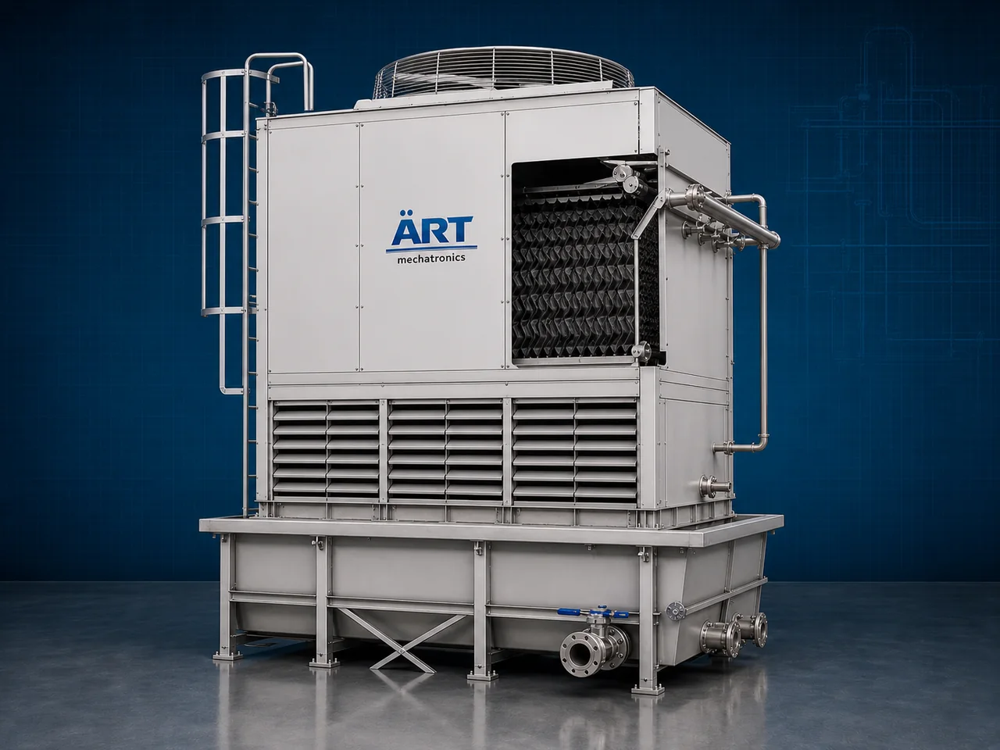

Cooling Tower Machine (Industrial Water Cooling & Heat Rejection System)
A Cooling Tower Machine, also known as an Industrial Cooling Tower, Water Cooling System, Heat Rejection Tower, or Industrial Heat Dissipation System, is an advanced industrial cooling solution designed for heat rejection, water cooling, process temperature stabilization, condenser cooling, HVAC cooling, and continuous industrial thermal management operations across food processing, pharmaceutical, chemical, plastic, HVAC, power generation, steel, and industrial manufacturing industries.

About the Cooling Tower
Cooling tower systems are widely used for:
- Industrial water cooling operations
- Heat rejection systems
- Process temperature control
- HVAC cooling applications
- Condenser cooling systems
- Machinery heat dissipation
- Refrigeration support systems
- Industrial thermal management operations
The machine improves:
- Process cooling efficiency
- Energy savings
- Equipment protection
- Production stability
- Temperature consistency
- Industrial productivity
- Operational reliability
Industrial cooling tower machines use:
- Evaporative cooling technology
- High-efficiency cooling fans
- Water circulation systems
- Fill media heat exchange systems
- PLC and HMI automation controls
to remove excess heat from industrial processes and maintain stable cooling conditions with superior efficiency and high industrial productivity.
Cooling tower machines are widely used in industries such as:
Food processing industries Chemical industries HVAC industries Pharmaceutical industries Plastic industries Steel industries Power generation industries Industrial manufacturing industries
where continuous cooling, efficient heat dissipation, and stable process temperatures are essential.
The machine is highly suitable for:
- Industrial process cooling
- Chiller and condenser cooling
- HVAC water cooling systems
- Heat rejection applications
- Manufacturing temperature control
- Industrial thermal management systems
ART Mechatronics offers high-performance cooling tower machines, engineered for continuous industrial operation, energy-efficient cooling performance, rugged construction, and reliable long-term industrial productivity.
Working Principle of Cooling Tower Machine
- 1. Hot Water Circulation Process Hot process water from industrial equipment or chillers is pumped into cooling tower system.
- 2. Heat Exchange & Evaporative Cooling Process Machine circulates air through cooling tower while water flows across fill media, allowing heat to dissipate through evaporation and airflow.
Advanced heat transfer technology ensures rapid cooling and efficient heat rejection operations.
- 3. Cooling & Heat Dissipation Operation Machine handles cooling of: ✔ Industrial process water ✔ Chiller condenser systems ✔ HVAC systems ✔ Refrigeration plants ✔ Plastic molding machines ✔ Chemical processing systems ✔ Power plant equipment ✔ Industrial machinery
accurately and continuously.
- 4. Temperature Stabilization & Water Recirculation Process Machine performs: Heat rejection Water cooling Temperature stabilization Thermal management Process cooling Continuous water recirculation
for efficient industrial cooling and energy management operations.
- 5. Intelligent Automation & Energy Management Integration Optional systems include: Automatic water level controls Variable speed fan systems Drift eliminators Water treatment systems Remote monitoring systems
- 6. Cooled Water Discharge & Recirculation Cooled water discharged automatically for: Process cooling systems Industrial chillers Manufacturing equipment HVAC operations Industrial refrigeration systems
Types of Cooling Tower Machines
- 1. Counter Flow Cooling Tower Designed for: ✔ High-efficiency industrial cooling applications
- 2. Cross Flow Cooling Tower Suitable for: ✔ Large-capacity industrial water cooling systems
- 3. FRP Cooling Tower Machine Uses: ✔ Corrosion-resistant industrial cooling operations
- 4. Induced Draft Cooling Tower Designed for: ✔ High-performance heat rejection systems
- 5. Forced Draft Cooling Tower Suitable for: ✔ Controlled airflow industrial cooling operations
- 6. Fully Automatic Industrial Cooling Tower System Designed for: ✔ Complete industrial cooling automation lines
Industries Using Cooling Tower Machines
🍅 Food Processing Industry Process cooling, refrigeration support, and industrial water cooling systems. ⚗️ Chemical Industry Chemical process stabilization and industrial heat rejection systems. 💊 Pharmaceutical Industry Temperature-controlled manufacturing and HVAC cooling systems. ⚙️ Plastic & Injection Molding Industry Mold cooling and industrial process temperature control systems. 🏭 Steel & Heavy Engineering Industry Industrial machinery cooling and thermal management systems. ⚡ Power Generation Industry Power plant condenser cooling and industrial water circulation systems.
Features & Advantages
- High-efficiency industrial cooling operation
- Rapid and reliable heat rejection systems
- Energy-efficient evaporative cooling technology
- PLC and automation control systems
- Improves process stability and equipment life
- Reduces overheating and thermal losses
- Supports multiple industrial cooling applications
- Reliable long-term industrial performance
- Smooth integration with industrial cooling lines
Technical Highlights
Machine Type: Cooling tower machine Industrial water cooling system Heat rejection tower Application Compatibility: Industrial process water HVAC systems Chiller condensers Manufacturing equipment Chemical plants Industrial machinery Integration: Cooling fan systems Water circulation systems Fill media heat exchangers Automatic control systems Features: PLC control system Touchscreen HMI FRP or steel construction Energy-saving fan systems Remote monitoring systems Applications: Industrial cooling Heat rejection Process temperature control Water recirculation Thermal management HVAC cooling Automation: Semi-automatic Fully automatic industrial systems
Turnkey Industrial Cooling Solutions
ART Mechatronics offers: Complete industrial cooling tower systems Automatic water cooling solutions Industrial thermal management systems Chiller and HVAC integration systems Installation & commissioning After-sales service & AMC
Why Choose Art Mechatronics
Expertise in industrial cooling and automation systems Customized cooling tower solutions for multiple industries High-performance and energy-efficient cooling technology Advanced PLC and automation systems Proven industrial cooling performance across sectors
Applications
Food Processing Plants Chemical Manufacturing Facilities Pharmaceutical Industries Plastic Processing Units Steel & Heavy Engineering Plants Industrial Manufacturing Industries
Related Process Equipment machines
Get pricing & specs for the Cooling Tower
Share the product, target capacity, current process and plant location. These details help our engineers discuss the right machine or line configuration.
One partner, from design to start-up
ART Mechatronics designs, manufactures, installs and commissions your Cooling Tower solution with regional presence in India, UAE and Thailand.